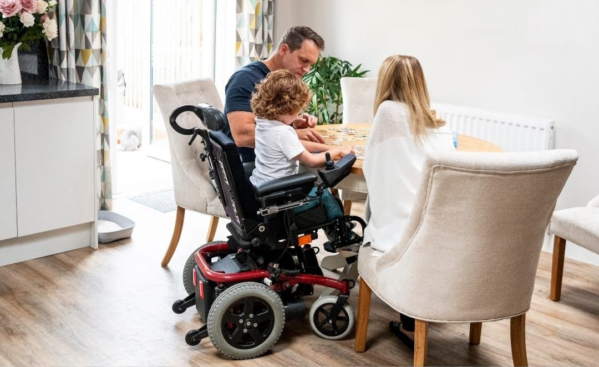
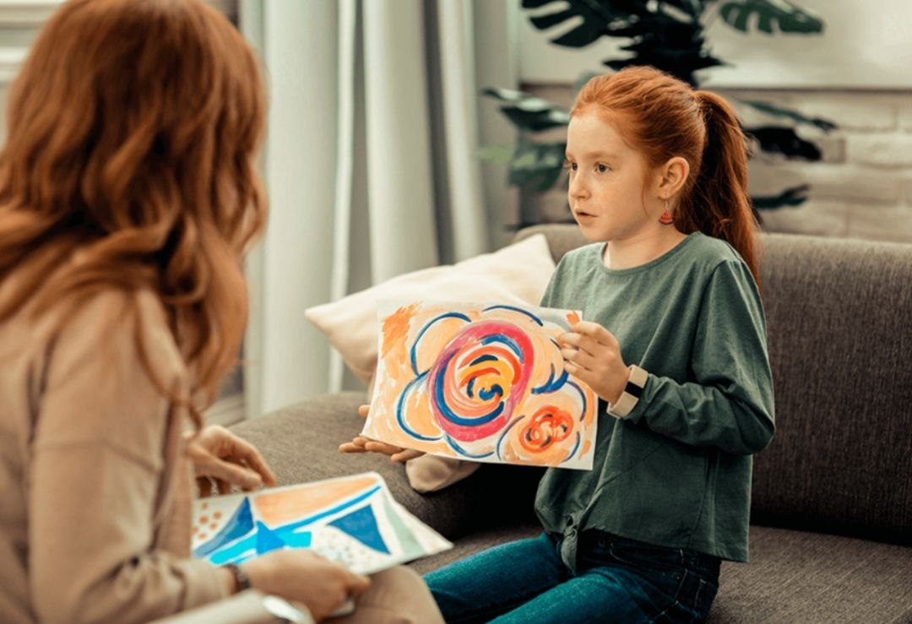
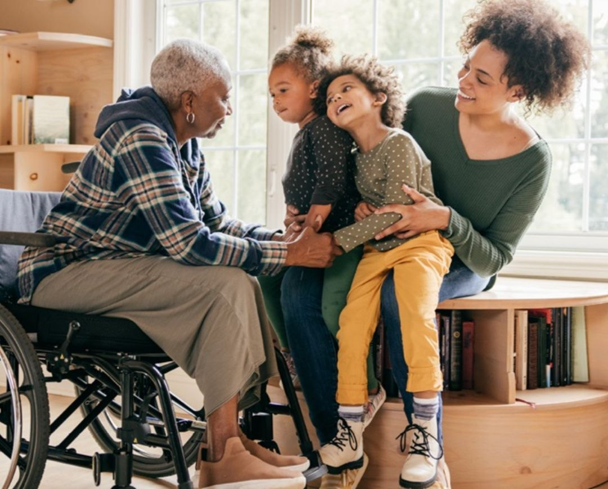
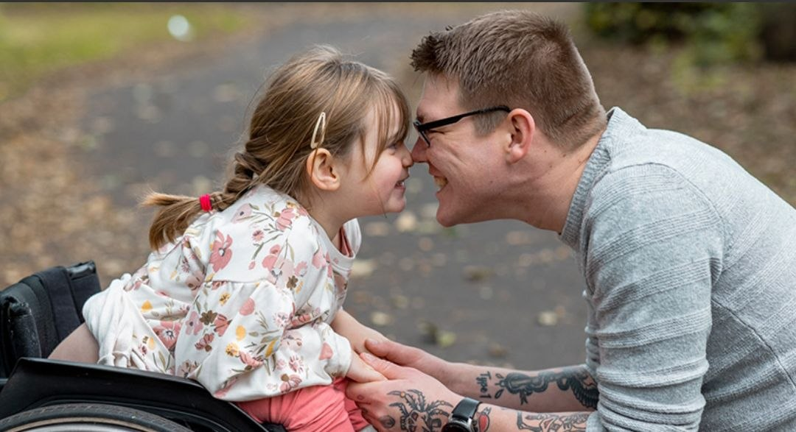

KIND
TEAM
NESS


Multe familii vulnerabile se confruntă cu lipsa banilor, a alimentelor și a condițiilor necesare pentru un trai decent. Copiii cu nevoi speciale au dificultăți de integrare și au nevoie de sprijin constant. Sprijinul comunității și al voluntarilor le poate oferi mai multă speranță și siguranță în viața de zi cu zi.

Provocările copiilor cu nevoi speciale – acești copii au nevoie de tratamente, terapii și atenție constantă, însă nu întotdeauna există resurse sau servicii specializate disponibile. Lipsa centrelor de suport sau costurile ridicate fac ca progresul lor să fie mai dificil.

Dificultăți financiare în familiile vulnerabile – multe familii nu au venituri suficiente sau stabile, ceea ce le împiedică să asigure copiilor condiții decente de trai. Apar probleme legate de hrană, îmbrăcăminte, încălzire și acces la educație, iar lipsurile zilnice creează stres și nesiguranță.

Lipsa sprijinului și integrarea socială – atât familiile vulnerabile, cât și copiii cu nevoi speciale se pot confrunta cu neînțelegere sau izolare din partea societății. Uneori le lipsește sprijinul comunității, iar integrarea în școală sau în activități sociale devine o provocare.